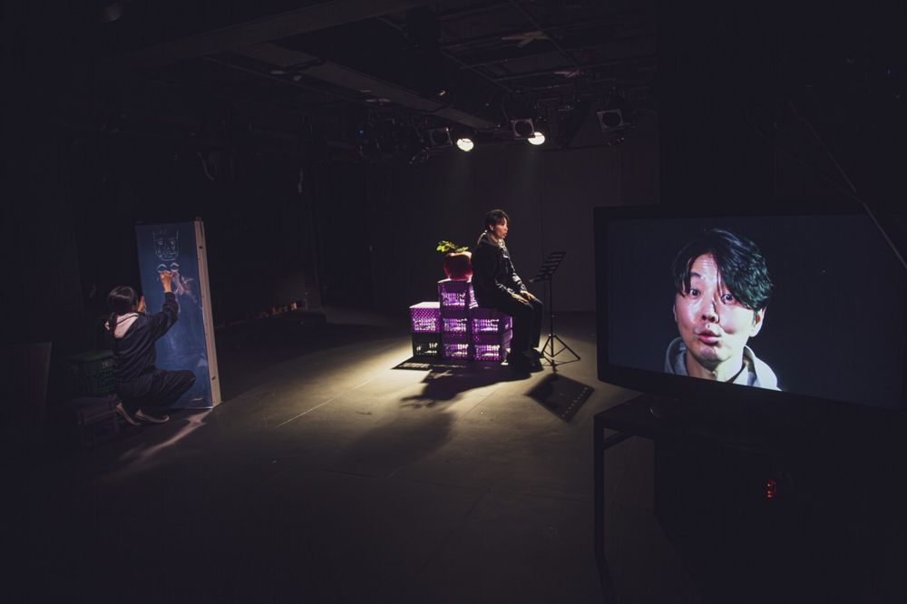

공동창작, 정유진 연출

역사시비프로젝트: 승자의 관점을 거부하고 우리의 관점으로 역사를 다시 쓰는 3개년 프로젝트. 2024년 한 해 동안 매달 한 편씩, 1년 전 같은 달에 있었던 사건을 출발점으로 삼아 공연을 올렸다. 4월. 몸은 내가 처한 환경에 예민하게 반응하고, 살아가는 동안의 역사는 몸에 쌓인다. 2023년 4월과 2024년 4월, 1년 사이 쌓인 몸의 기록을 살피고 익숙함에 굳어 버린 몸을 깨워 본다.
2024.4.5–14 / 예술공간 혜화 - 역사시비프로젝트 4월
연출: 정유진
출연: 박정근, 이동영, 정나무
조명디자인: 전규상
목소리 출연: 송정화
기록 촬영: 한문희
그래픽디자인: 워크룸
기획: 나유진, 노지상
공동기획: 창작주체 예술공간 혜화
2024.4.18 관람 후기
2024.4.10 관람 후기
이전: 〈양떼목장의 대혈투〉 | 다음: 〈역사탐험연구소〉
아카이브로 돌아가기 | 아무 작품이나
발행일 2026.11.10